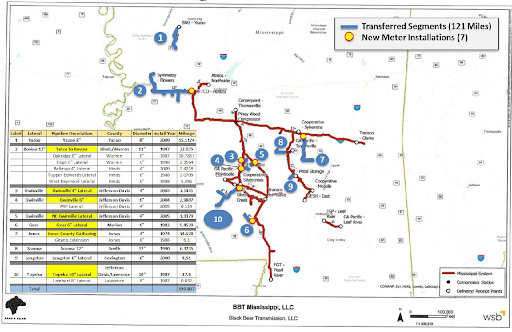
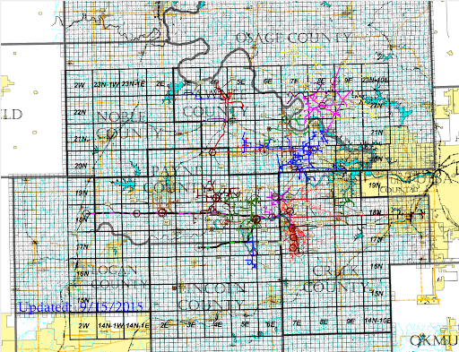
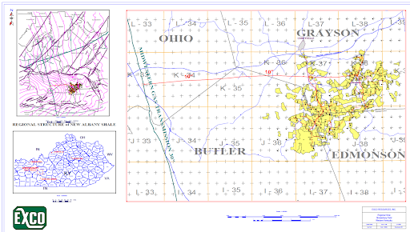

Magnolia Measurement & Compression
We’ve come to own natural gas pipelines: the Maxie field in Wiggins and the Pistol Ridge field in Lumberton. These assets play a key role in our broader infrastructure by providing access to significant natural gas reserves. We also own the Black Bear Transmission, a large gas transmission trailing through Mississippi and Louisiana. This extensive network enables us to efficiently and safely transport natural gas across state lines.
Just west of Tulsa, Oklahoma, we have secured over 1,000 miles of natural gas pipelines with Skye OK, who wants to convert the entire line into a cryptocurrency mining system. This partnership provided the unique opportunity to combine the natural gas community with cryptocurrency mining operations. By connecting to oil and gas endpoints such as stranded gas, environmental impacts negatively associated with this industry can be put to a safe, friendly, and economic use.
Along with SO KY, we have acquired over 100 miles of natural gas pipelines across four counties in central Kentucky. This partnership strengthens our regional presence and provides a powerful backbone for commercial needs. These pipelines are strategically positioned to further integrate into the Kentucky oil and gas economy.
Our packages leverage stranded gas to power cryptocurrency miners, offering an eco-friendly and cost effective solution for both the natural gas industry and miners. By tapping into this endpoint, we provide a reliable power source that would otherwise go to waste. This innovative approach provides a marketable opportunity for our clients. Currently, a large network of pipelines - owned by our partner Skye OK - is being modified to accept our system. This alteration will not only enhance the efficiency of the mining operations by reducing waste, but will bolster our ability to expand.. As more pipelines are integrated into the system, the network’s capacity to utilize the waste will grow. As a result, we are creating a self-sustaining monetary loop that will continue to drive our expansion into this industry.